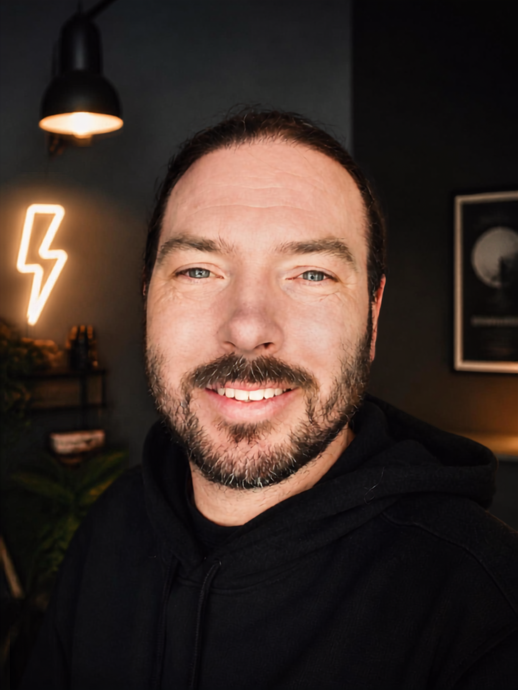

Integral Care
Zelfstandig begeleider in de gehandicaptenzorg en het sociaal-maatschappelijk domein
Rust, duidelijkheid en overzicht in complexe begeleidingssituaties.
Met 12,5 jaar ervaring ben ik inzetbaar als begeleider, persoonlijk begeleider en coördinerend begeleider binnen de gehandicaptenzorg en het sociaal-maatschappelijk domein. Ik werk overzichtelijk en aandachtig, ook wanneer een situatie complex is, met oog voor de mens achter de vraag. Integral Care is inzetbaar voor opdrachten bij zorg- en welzijnsorganisaties, rechtstreeks of via bemiddeling.

Over mij
Ik werk op een rustige, betrokken en nuchtere manier. Ik luister aandachtig, houd overzicht en blijf in complexe situaties helder en aanwezig. Mijn begeleiding is mensgericht, duidelijk en respectvol.
In mijn werk staat aandacht voor de persoon centraal. Ik sluit aan bij de situatie, met oog voor eigen regie, veiligheid, rust en wat nodig is om goed te kunnen functioneren.
Voor mijn werk binnen zorg en begeleiding beschik ik over de opleiding Persoonlijk Begeleider Maatschappelijke Zorg, MBO niveau 4, aangevuld met een propedeuse HBO Toegepaste Psychologie.
Mijn ervaring ligt voornamelijk in de woonbegeleiding binnen de gehandicaptenzorg. Ik werk persoonlijk en professioneel en stem zorgvuldig af met de cliënt, het team en andere betrokkenen.
Begeleiding
Ik bied professionele begeleiding en ondersteuning bij wonen, dagelijks leven, ontwikkeling en participatie. Mijn ervaring ligt voornamelijk binnen de gehandicaptenzorg en woonbegeleiding.
Ik ben inzetbaar als begeleider, persoonlijk begeleider en coördinerend begeleider. Afhankelijk van de opdracht kan mijn rol bestaan uit directe begeleiding, coördinerende werkzaamheden, het werken met ondersteuningsplannen en afstemming met het team en andere betrokkenen.
Ik werk zelfstandig waar dat kan en zorgvuldig samen waar dat nodig is. Bij complexe of veranderende situaties bied ik rust, duidelijkheid en overzicht.
Ervaring
Met 12,5 jaar ervaring binnen de gehandicaptenzorg heb ik ruime ervaring in verschillende woon- en begeleidingssettings, van dagelijkse begeleiding tot persoonlijk begeleiderschap en complexe ondersteuningsvragen.
De Seizoenen – Overkempe, Olst
Begeleider en persoonlijk begeleider · circa 12 jaar
Het grootste deel van mijn loopbaan binnen de gehandicaptenzorg werkte ik binnen de 24-uurs woonvoorzieningen van Overkempe. Ik begon als begeleider en groeide door naar persoonlijk begeleider. In deze periode begeleidde ik langdurig bewoners, met aandacht voor zelfstandigheid, eigen regie en een stabiele woonomgeving.
Urtica de Vijfsprong, Vorden
Flexbegeleider · sinds 2026
Als flexbegeleider werk ik op verschillende woonafdelingen en maak ik kennis met uiteenlopende werkwijzen en begeleidingsvragen.
Werkgebied en expertise
Persoonlijk begeleiderschap · methodisch werken · ondersteuningsplannen · rapportages in het Elektronisch Cliëntendossier (ECD) · multidisciplinair overleg (MDO) · cliëntregie, signalering en evaluatie · ADL · LVB · NAH · ASS · psychiatrische en psychosociale ondersteuningsvragen · complexe begeleidingssituaties · samenwerking met het Centrum voor Consultatie en Expertise (CCE) bij complexe vraagstukken.
Ik beschik over een VOG, afgegeven in oktober 2025, en geldige BHV- en medicatiecertificering.
Voor organisaties
Integral Care is beschikbaar voor tijdelijke en flexibele inzet bij zorg- en welzijnsorganisaties, rechtstreeks of via bemiddeling.
Mogelijke inzet:
- begeleider;
- persoonlijk begeleider;
- coördinerend begeleider;
- tijdelijke vervanging of versterking;
- ondersteuning bij complexe of veranderende begeleidingssituaties.
Ik ben inzetbaar binnen zorg- en woonvoorzieningen en werk zorgvuldig samen met teams en andere betrokkenen. De inzet kan variëren van korte ondersteuning tot structurele begeleiding, afhankelijk van de opdracht en de situatie.
Tarief en inzet in overleg, afhankelijk van aard, duur en omvang van de opdracht.
Begeleiding vanuit een Wmo-PGB
Integral Care gaat op termijn ook individuele begeleiding bieden aan volwassenen vanuit een Wmo-PGB. De mogelijkheden zijn afhankelijk van de beschikking, de toegekende ondersteuning en de voorwaarden van de betreffende gemeente.
Contact
Neem gerust contact op met Integral Care voor een kennismaking, vragen over mijn begeleiding of informatie over de mogelijkheden.
Pepijn Hinten White · Integral Care
Deel via e-mail geen medische of andere gevoelige cliëntgegevens.